A manufacturer enters the trade
For-Play began as a Los Angeles amusement manufacturer in 1972. A September 16 report in Cash Box says the company had been organized and established during the preceding spring. It names industrial engineers William D. Lewis as president and Robert Harp and Harry Bieker as design engineers. That contemporary account offers a more specific starting point than a later summary centered entirely on Star Trek. The company entered the trade with an electronic rifle-and-target attraction, Las Vegas Gallery, and a stated intention to develop a broader line of electronic games.
The distinction between organization and incorporation remains important. A later historical account gives July 20, 1972 as the incorporation date, but the underlying filing has not been recovered. That date might describe a legal milestone after the spring organization reported by Cash Box. The two dates need not conflict, yet the surviving evidence does not permit them to be treated as equally verified. The documented spring 1972 establishment is therefore the stronger starting point, while July 20 remains a secondary incorporation claim.
For-Play's early public identity was closely tied to ACA Sales and Service. The September report describes ACA as an operating and distributing concern appointed to represent the new factory worldwide. It identifies Henry Leyser as ACA president and Mickie Greenman as national sales manager. Those named roles explain why later trade coverage repeatedly discusses For-Play products through ACA personnel. The men promoting the line were not necessarily the engineers designing it, and the contemporary report distinguishes them explicitly.
A later history attributes the founding to Leyser, Greenman, and Bill Lewis. The contemporary account instead highlights Lewis, Harp, and Bieker. These statements might describe different kinds of involvement: financial organization, commercial partnership, company management, and engineering need not belong to the same people. Without a corporate filing or partnership record, however, that possible reconciliation remains an interpretation. The early report should lead the account, with the later attribution acknowledged rather than silently substituted. William D. Lewis and Bill Lewis may refer to the same person, but the shortened name alone does not settle that identification.
The September announcement promised more games during the remainder of the year. That is evidence of an announced plan, not a list of completed products. Star Trek's later appearance in the October trade columns provides the documentary bridge from the general plan to a particular video machine. The sequence is more informative than a retrospective label of short-lived clone maker: a new electronic amusement factory first offered a physical target game, then marketed a space-themed television game through an established distributor.S01S19S20
Las Vegas Gallery: the first announced For-Play product
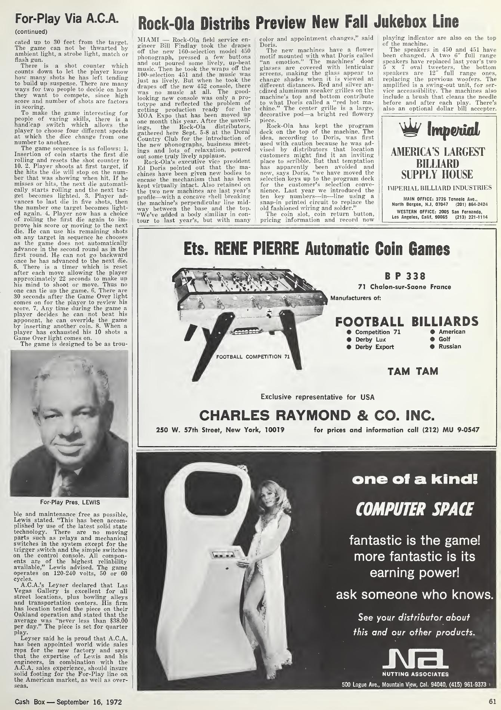
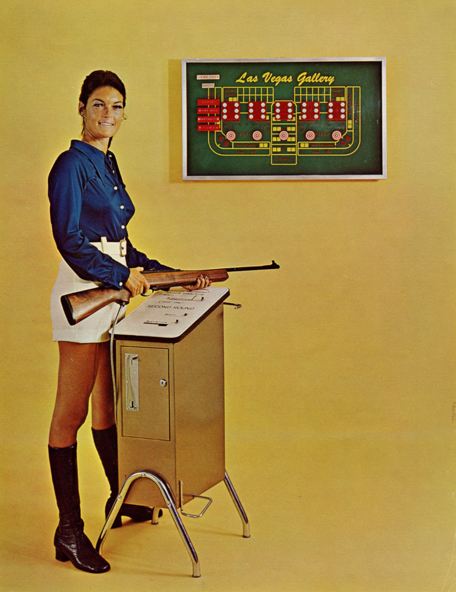
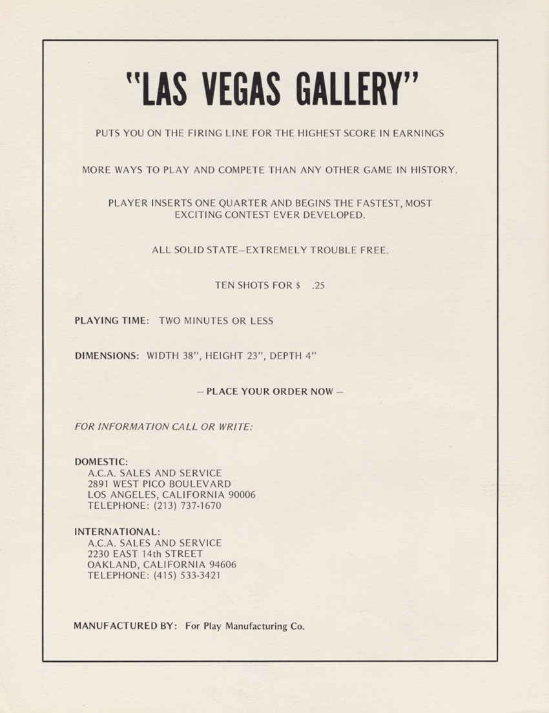
The initial Las Vegas Gallery announcement deserves attention because it describes what For-Play thought an electronic amusement factory could sell before its video catalog became the main subject of later histories. The September 1972 Cash Box report describes a separate rifle console and illuminated target rather than a screen-driven game. The target measured two feet by three feet and four inches deep. Its background evoked a dice table, with five dice and targets. The rifle, connected to its console, sent an infrared beam toward that physical display.
The separate arrangement allowed the target to stand as far as 30 feet from the console, according to the report. That gave the attraction a different relationship to a location from the self-contained cabinets shown in the video flyers. An operator could arrange a shooting position and a target across a space rather than place every part of the experience in one upright enclosure. The report advertised resistance to interference from ambient light, strobe lights, matches, and flash guns. These were reliability claims addressing a practical concern for an optical target system; they were not independently measured in the surviving account.
The reported play sequence began when a coin caused the first die to roll and reset a shot counter to ten. Shooting a target stopped the die on the number displayed when it was hit. Whether the player hit or missed, the next die started rolling and its target lit. The player progressed through five dice with five shots, then could use the remaining shots to improve the result. During that second round, the player could reroll the first die or advance, but could not return to an earlier die after moving on. These details describe a sequence with tactical choices rather than a simple collection of unrelated targets.
The article also describes a timer reset after each move. It allowed about 22 seconds for the player to decide whether to shoot or move, preventing indefinite occupation of the machine. After the ten shots were exhausted, a Game Over light appeared, and the player had 30 seconds to examine the score. Another coin could override a session when a player judged the score unpromising. These are contemporary descriptions of the intended operation; no working example has been used to verify the timing or behavior directly.
The account also describes ways for two people to compare results, using a high score or the number of shots as factors. That describes suggested competition around the attraction, not proof of two simultaneous electronically tracked player positions.
A handicap switch offered four speeds at which the dice changed numbers. That adjustment gave the operator a way to accommodate different skill levels. It also shows why the company emphasized electronic control: the interaction depended on timed changes, target illumination, counters, and player decisions. A familiar physical rifle connected those functions to an approachable action. Electronic amusement, in this product, meant using circuits to organize a physical play sequence rather than necessarily displaying generated pictures on a television.
The report attributed the low-maintenance ambition to Lewis. It described solid-state circuitry and identified the trigger switch and simple console switches as moving components. Operating power was advertised as 120–240 volts at 50 or 60 cycles. Those specifications are relevant to the worldwide sales representation announced in the same article. They suggest a product being presented with more than one electrical market in mind, although they do not prove actual installations in every country using those supplies.
ACA's Leyser described location tests on the Oakland operation and promoted bowling alleys, transportation centers, and street locations. The reported earnings belong to that sales account rather than an independently inspected collection ledger. The historically useful point is that ACA combined manufacturing publicity with route-operation experience: it could present a new attraction while claiming knowledge of how it performed in a location. That role helps explain the company's recurring presence in For-Play announcements.
The original Las Vegas Gallery flyer adds a clear picture of the separated equipment. A posed customer holds the rifle beside a narrow standing console, while the dice-and-target assembly is mounted on a wall. The reverse advertises ten shots for a quarter and play lasting two minutes or less. It names For Play Manufacturing Co. and supplies ACA domestic and international contacts. Those printed credits independently connect the pictured attraction to the same manufacturer and commercial arrangement as the formation report.
Its dimension list gives width 38 inches, height 23 inches, and depth four inches. The earlier trade report's target measurements were two by three feet and four inches deep. The near correspondence suggests that the flyer may also be describing the target, but the page does not explicitly label the assembly being measured. The small dimensional difference should be preserved rather than used to invent a revision. The pictured console clearly constitutes an additional physical element; the numbers should not be presented as a complete footprint for every part of the attraction.
Las Vegas Gallery also puts a face beside the new factory. The continuation page includes a portrait captioned For-Play president Lewis. It is one of the few recovered human images directly identified with the manufacturer. The portrait and detailed operating description are both preserved in the source set. The page also carries unrelated advertisements, including Computer Space. Their presence supplies period context but does not demonstrate a contractual or engineering relationship between the companies appearing on the same page.
The attraction remains excluded from the three-title video count. Its inclusion here instead preserves the manufacturing story: the first announced product used infrared aiming, physical dice imagery, and timed electronic control, and ACA introduced it as the start of a larger line. A history beginning only with Star Trek would lose that distinction and make the company appear to have entered the trade with a single already-defined video-game strategy.S01S29
Burbank, Sun Valley, and the names on the paperwork
The surviving paperwork places For-Play in several parts of the Los Angeles area. The formation report describes organization in Los Angeles. Rally and Sport Center flyers give 2807 Empire Avenue in Burbank, California 91504. The July 1974 Cash Box manufacturers directory lists For-Play Manufacturing Corp. at 10556 Keswick in Sun Valley, California 91352. The December Bio-Computer advertisement likewise identifies For-Play manufacture in Sun Valley. Together, these are dated evidence of the business's public addresses, although they do not establish the exact date or nature of a move.
A later account uses Sunnyvale, a different California city. The contemporary Sun Valley directory is the stronger location evidence for the period it covers. It would be a mistake to invent a relocation to Sunnyvale solely to reconcile that spelling. The prudent account preserves the documented Los Angeles-area addresses and treats the later wording as unsupported by the primary material recovered here. A corporate filing could clarify a registered office, but no such record is currently held.
The company name also varies slightly across documents: For-Play Mfg. Co., For Play Manufacturing Co., For-Play Manufacturers Corp., and For-Play Manufacturing Corp. These are the forms printed in the sources and are retained as such here. Their variation does not, by itself, establish multiple corporations, reorganizations, or ownership transfers. The recurring product and sales relationships support treating them as one historical subject while keeping the exact legal identity open.S06S08S12S14S19
How ACA carried the products to market
ACA supplied a commercial structure around For-Play's products. Star Trek's flyer separates domestic and international contacts; Rally's March 1973 report explicitly assigns ACA national and international distribution; Sport Center appears in ACA show and shipment coverage. This repeated pairing supports a consistent distinction between the manufacturer and its sales representative. It also explains why much of the surviving evidence consists of dealer-oriented announcements rather than engineering records.
Trade columns document the work of creating that network. In October 1972, Greenman was lining up distributors for the For-Play line, while Leyser and George Muraoka were traveling to investigate foreign products and promote the business. A later October item says ACA had distribution in more than 30 states. The figure describes the distributor's network as reported at the time; it does not establish a count of Star Trek installations or destinations because the column does not make that title-specific claim.
International trade became more explicit with Rally and Sport Center. February 1974 coverage reports completed Sport Center shipments to American and overseas customers, including Europe and a substantial South African consignment. July reporting credits exports of both video games with expanding ACA's overseas contacts. This is concrete evidence that the products participated in international commerce. The size of particular shipments and the identities of all recipients remain less secure. The February quantity conflict and the unnamed South African customer must stay visible rather than being resolved through guesswork.
ACA also discussed the relationship between new and used equipment. The July 1974 report explains how selling new machines could build customer contacts that benefited the used-equipment business. For-Play's games therefore mattered to ACA beyond their individual sales. They could introduce an overseas buyer to a broader catalog and a continuing supplier relationship. That commercial explanation comes from ACA's own contemporary account and does not establish For-Play's profits or its share of the export market.
The available record leaves the manufacturing business and the distribution business visible as related but distinct operations. For-Play credited its name on products; ACA recruited dealers, presented games at shows, and reported orders and shipments. Preserving those roles is central to understanding a small company whose products could circulate more widely than its own public profile suggests.S01S03S04S07S11S12
The video games
Star Trek: a space game sold through ACA
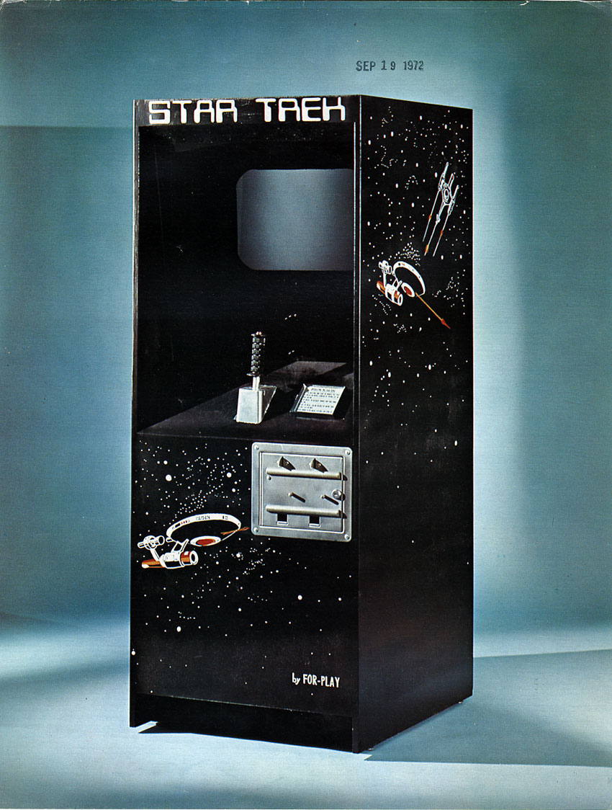
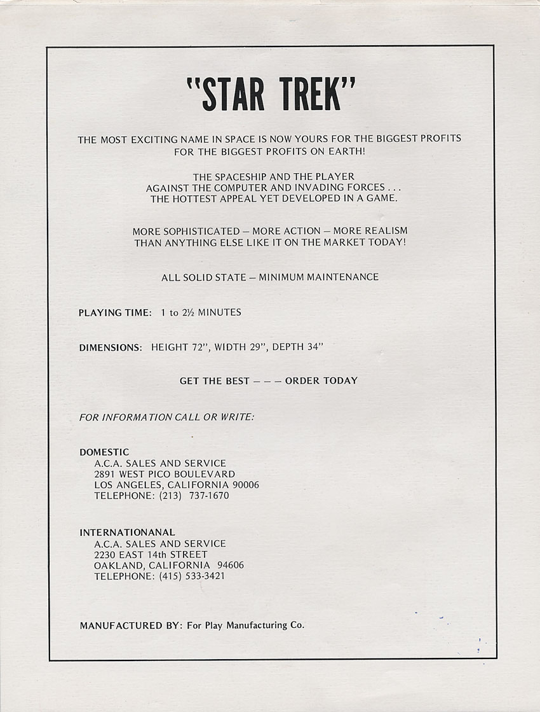
Star Trek gives For-Play a place in the first wave of commercial arcade video games. Its surviving sales flyer presents an upright cabinet with a large, dark screen opening, a prominent joystick, and space imagery extending across the front and side. The name appears in large lettering above the display. A credit near the bottom identifies For-Play, while the reverse explicitly names For Play Manufacturing Co. as manufacturer. These are contemporary product credits, independent of the retrospective database entries that have kept the game visible to later collectors.
The cabinet photograph is useful evidence about the product's presentation. Its joystick is visibly distinct from the rotary controls on Rally and Sport Center. The image also shows how much of the space theme lived outside the screen: stars and spacecraft decorate the cabinet itself. That visual treatment helped communicate the subject before a customer played. The photograph cannot tell us how the joystick's directions were wired, how firing worked, or what appeared during an actual session. Those questions require instructions, working hardware, or a reliable technical record.
The flyer describes a player-controlled spaceship confronting computer-controlled invading forces. It advertises solid-state construction and a playing time between one minute and two and a half minutes. It gives the cabinet dimensions as 72 inches high, 29 inches wide, and 34 inches deep. Unlike several other For-Play advertisements, those axes are expressly labeled, so they can be reported without reconstructing the order of an unlabeled dimension list. The same care applies to gameplay: the advertising establishes a space-combat premise, but does not provide enough detail to reconstruct a complete control or scoring system.
A September 19, 1972 stamp appears on the flyer front. The stamp is tangible evidence on the surviving document, but its purpose is unspecified. It could reflect receipt, filing, or another administrative event and does not establish an exact launch date. Contemporary trade reporting provides a firmer commercial sequence. The October 7, 1972 Cash Box says ACA returned from the Chicago MOA show enthusiastic about Star Trek's reception. The October 21 issue says ACA was taking orders for Star Trek and Las Vegas Gallery. The October 28 issue carries Mickie Greenman's favorable sales assessment. These reports establish an appearance at the show and an ordering presence that autumn without identifying the first shipment.
ACA's role is unusually clear on the flyer. It supplies a Los Angeles contact for domestic sales and an Oakland contact for international sales. The arrangement places For-Play's manufacture and ACA's commercial representation on the same document. This distinction prevents a common mistake in early arcade histories: treating the name attached to an advertisement, a distribution office, and a factory as interchangeable. A sales network could bring a small manufacturer's product to customers without making the distributor its designer or owner.S02S03S04S05
Rally: a compact two-control cabinet
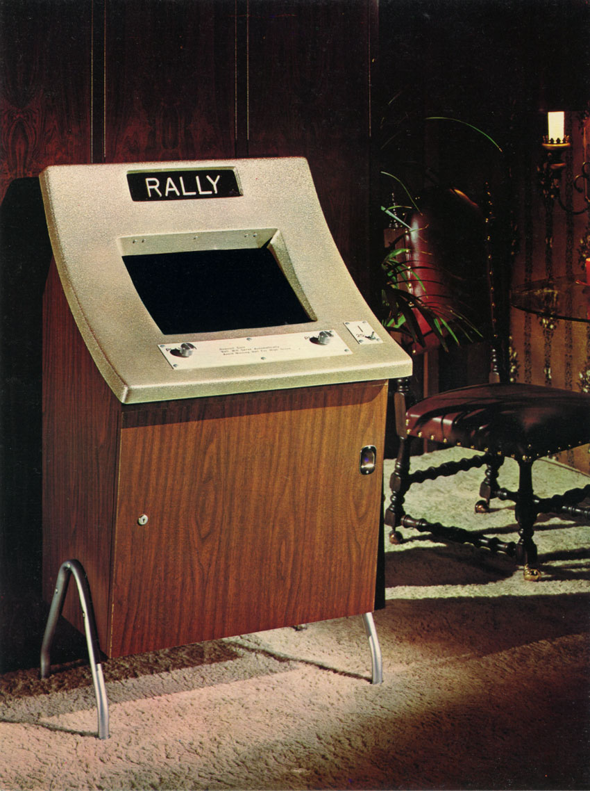
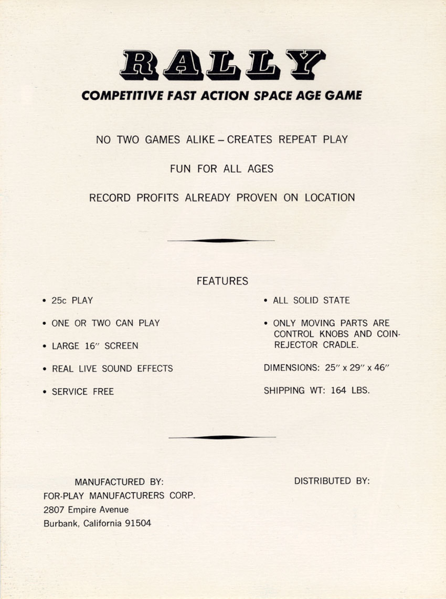
Rally's original flyer presents a markedly different product. A sloping screen housing sits above a wood-patterned cabinet supported by metal legs. Two rotary controls occupy opposite parts of the control panel, and the title appears above the display. The photograph communicates an arrangement intended for two people to stand together at the machine. It also establishes a visible design contrast with Star Trek's enclosed upright cabinet and single prominent joystick.
The reverse advertises one- or two-player play, a 16-inch screen, sound effects, and a 25-cent charge. It names For-Play Manufacturers Corp. at 2807 Empire Avenue in Burbank. Its distributor field is blank in the recovered copy, so this particular flyer does not by itself identify a distributor. The March 17, 1973 Cash Box supplies that missing commercial context: it identifies For-Play manufacture and ACA's exclusive national and international distribution. The distinction between the two sources matters because it preserves what each actually says.
The March report places Rally on location and describes samples shipping to American distributors. That supports commercial availability by March 17, 1973. It does not resolve the first production day or prove that all distributors received their samples simultaneously. The advertisement's enthusiasm about earnings belongs to its sales purpose. No audited location collections or production ledger has been recovered to turn those promotional statements into measured performance.
Rally's flyer lists dimensions of 25 by 29 by 46 inches and a shipping weight of 164 pounds. The dimensional axes are not labeled. Repeating the numbers is justified; assigning each to width, depth, or height without another source is not. The construction is advertised as solid state, with the control knobs and coin-rejector cradle described as the moving parts. This is useful contemporary positioning about maintenance, but it is not a board inventory or proof that the machine never required service.
The one-player option is also worth preserving without overinterpreting it. The flyer says one or two can play; it does not establish the mechanism of solitary play. That line alone does not establish a computer-controlled opponent. Similarly, later claims about the number of integrated circuits require an inspected schematic or board. An inventory at Andy's Arcade lists Rally paperwork with a basic photocopied wiring diagram and instructions. That is a concrete documentary lead, although the inventory row supplies no downloadable copy.S06S07
Sport Center: several choices in one machine
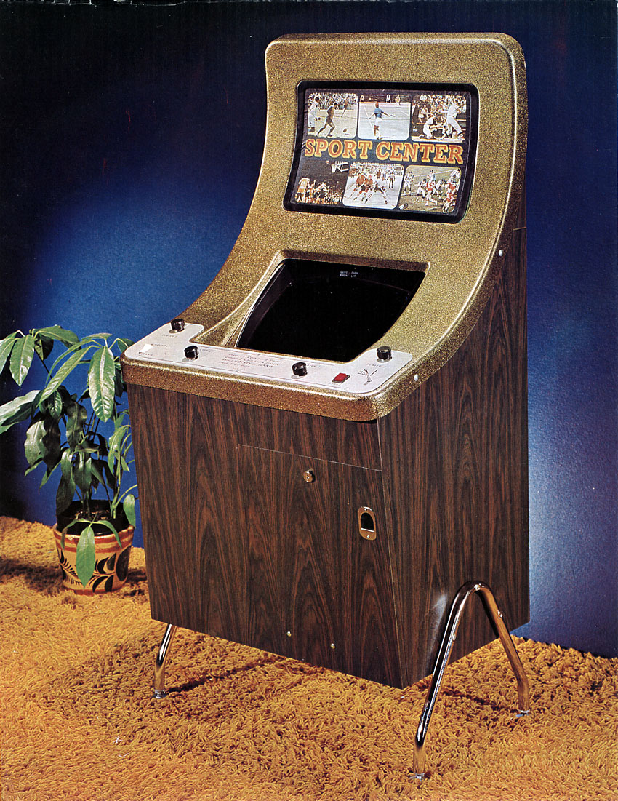
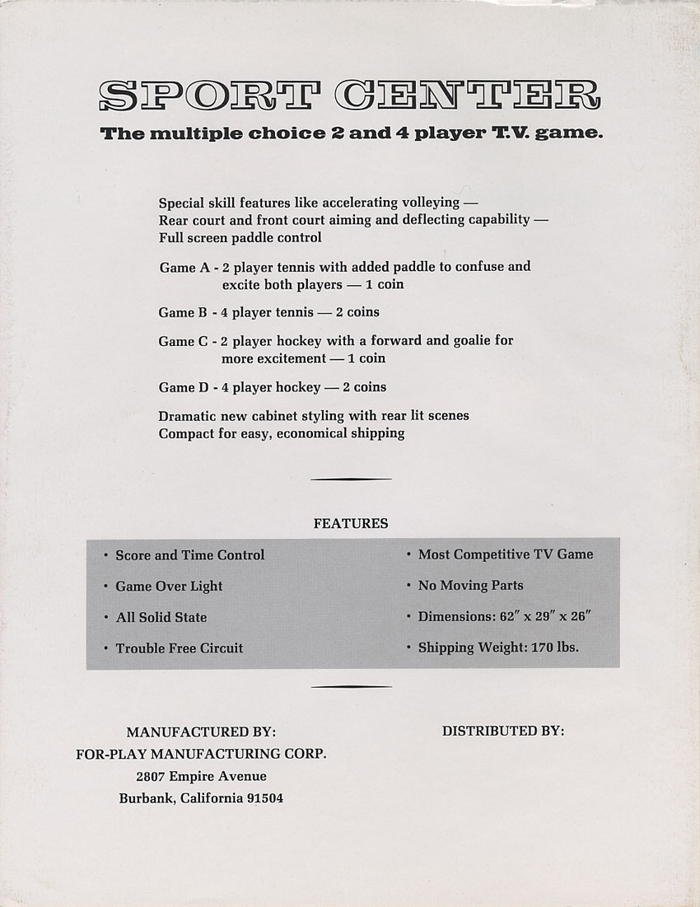
Sport Center developed the multi-player offering further. Its flyer front shows a wood-patterned cabinet with a tall upper section containing the title and sports photographs. Four rotary controls are visible around the control area. The marquee spells the title Sport Center, providing a primary basis for that form even though later catalogs sometimes use Sports Center. The alternate spelling is best treated as a catalog variation rather than another game.
The flyer offers four choices. Game A is two-player tennis with an added paddle, costing one coin. Game B is four-player tennis for two coins. Game C is two-player hockey, with a forward and goalie, for one coin. Game D is four-player hockey for two coins. The December 15, 1973 advertisement calls the first choice two-player rally instead of tennis. That difference belongs in the record; it does not by itself prove a separate revision. Both documents describe the added-paddle feature and the same general four-choice offering.
The advertised features include accelerating volleys, aiming and deflection from front and rear court, full-screen paddle control, and score and time control. The December advertisement says the four choices reside on one circuit board. That is an explicit contemporary engineering claim, although the photographed board and unheld schematic do not verify the complete four-choice circuitry. These descriptions give the product more substance than a generic label such as tennis game. They suggest why ACA could promote it as offering several experiences in one cabinet. They do not establish every collision rule, timer setting, or scoring detail, which remain unresolved without surviving instructions or working hardware.
The November 24, 1973 Cash Box provides contemporary show context. Its photograph and caption identify ACA unveiling Sport Center at the MOA show and describe tennis and hockey for two to four players. This supports a presentation in November, while leaving the first customer shipment unresolved. The subsequent December advertisement and February 1974 shipment report show that the product moved beyond a single show appearance into an active sales campaign.
The February report is valuable and imperfect. Its headline gives a first shipment total of 1,000 machines, while its body says 2,000. Both figures occur in the same contemporary item. Choosing the larger figure would produce a more dramatic story but would conceal the source conflict. The defensible conclusion is that ACA reported substantial completed shipments to the United States and overseas, while the exact quantity remains unresolved. The report names Europe and a major South African shipment but does not identify the South African recipient. It therefore cannot support a specific connection to Lewlesal. A companion item describes a contemplated French relationship with Francis-Claude Gosteli and Electro-Kicker. Its language concerns a deal expected to be finalized, not a recovered signed agreement. That prospective relationship belongs beside the confirmed shipment reporting with its status intact: the sources show an effort to build international representation, but do not establish every proposed agreement as completed.
By July 1974, a Cash Box retrospective illustrated both Rally and Sport Center among machines produced during the preceding annual period. Another item credited exports of those games with expanding ACA's overseas contacts. Together, those pages show how the video products contributed to a wider distribution business. They do not prove uninterrupted production throughout the entire period or provide exact release dates. The surviving evidence is strongest about product identity, commercial representation, advertised choices, and the existence of international trade; it is weaker about output totals and the underlying engineering.S08S09S10S11S12
Sport Center's four-choice offer in detail
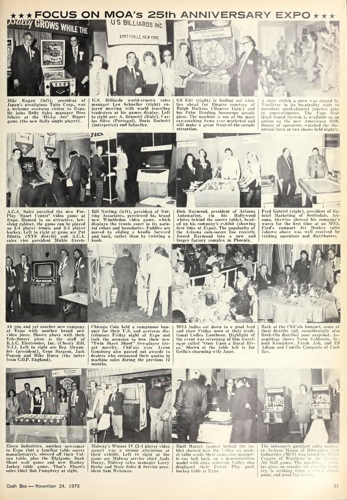
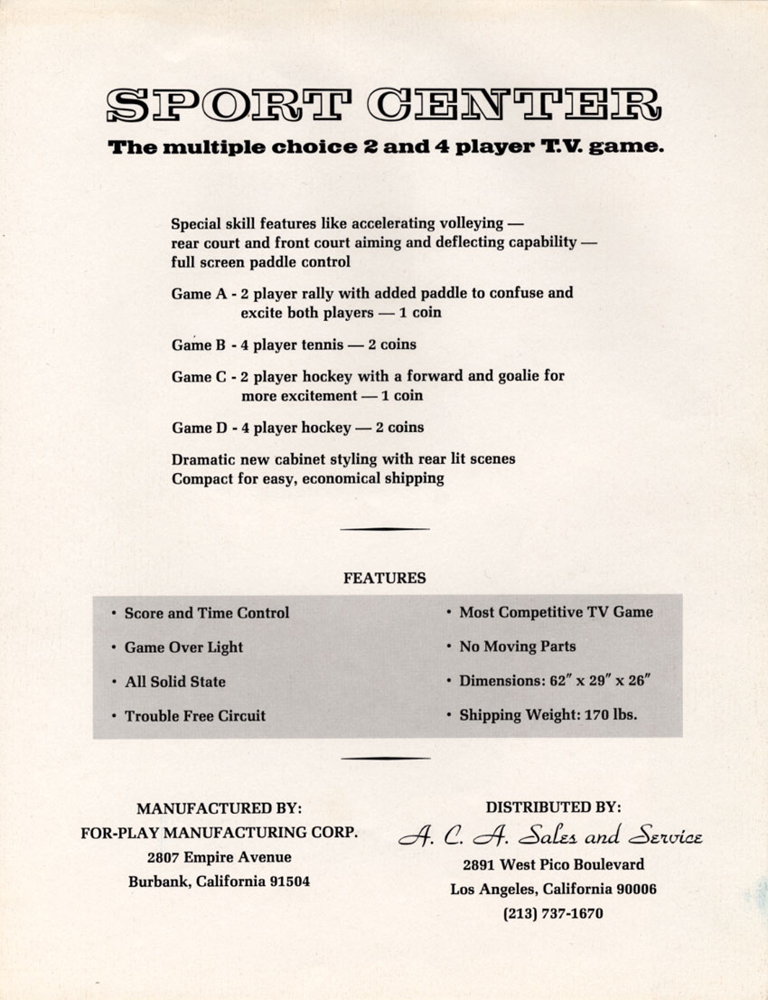
Sport Center's four advertised configurations are central to understanding its place in the line. The manufacturer did not merely promise that additional people could share the machine. It described tennis and hockey choices, different player capacities, and different coin requirements. That structure gave the dealer a way to explain what a customer received for one coin or two, using named configurations rather than an undifferentiated multiplayer label.
Game A's added paddle is explicitly presented as a way to complicate the two-player tennis encounter. The flyer does not define its movement, ownership, or collision rules. The December advertisement's use of rally for the same choice makes the naming less uniform, but the common description of an extra paddle is useful continuity. The evidence supports retaining both names as source wording within the same advertised four-choice machine. It does not establish that Rally's complete circuitry was installed inside Sport Center or that Game A was a separately sold title.
Game B extends tennis to four participants and requires two coins. The source describes capacity and payment; it does not establish the exact division into teams or the distribution of paddles. An intuitive reconstruction might place two players on each side, but that remains a hypothesis until instructions or tested operation confirm it. The source establishes capacity and payment, not the exact team arrangement.
Game C describes two-player hockey with a forward and a goalie. Those named roles distinguish it from the tennis choices, but again leave room for technical questions. The flyer does not explain how the forward and goalie are controlled, whether both move together, or how a goal is counted. Game D is four-player hockey for two coins. These are meaningful advertised differences even without a complete rules reconstruction. Their preservation is preferable to reducing the machine to a generic Pong-style game and losing the product's own account of its options.
The claim of accelerating volleys suggests changing pace within a rally. Front- and rear-court aiming and deflection likewise promote a degree of directional control. They belong in a description of the advertised experience, qualified as such. The material does not identify an acceleration curve or an exact deflection formula. Numbers for speed, angles, or timed increments would create precision that the surviving documentation does not supply.S08S10
Alternate flyers and what actually changes
The second Sport Center flyer shows the same recognizable cabinet configuration in a different staged setting, beside a pool table, and changes the reverse's commercial wording. Its Game A is labeled two-player rally, matching the December trade advertisement, rather than the tennis wording on the first recovered flyer. It expressly prints ACA Sales and Service as distributor at 2891 West Pico Boulevard in Los Angeles. The For-Play Manufacturing Corp. credit and Burbank address remain present. This is a useful documentary comparison because the difference concerns the offered choice and the sales credit, not a demonstrated new cabinet.
The added-paddle description, four-player tennis, and two hockey offerings remain consistent across these versions. Their agreement supports treating both sheets as promotion for Sport Center while preserving the difference in Game A terminology. The reverse also retains the 170-pound shipping weight and 62 by 29 by 26-inch dimensions. Its claim of rear-lit scenes supplies additional advertising context for the sports photographs above the display. No release date for the alternate printing is verified, so its place within the campaign cannot be fixed from the archive's alternate label alone.
Rally's alternate sheet combines a cabinet image, feature list, manufacturer credit, and a blank distributor field on one page. The recovered copy bears a handwritten April 1973 notation and a numerical stamp. Their administrative purpose is unspecified. The page is evidence of another surviving sales presentation, not a first-sale receipt or production record. Its photograph and text are consistent with the two-control Rally already documented. Without a dated revision statement or an identifiable construction change, it does not justify adding another title or hardware version to the catalog.S06S08
Comparing the three video cabinets
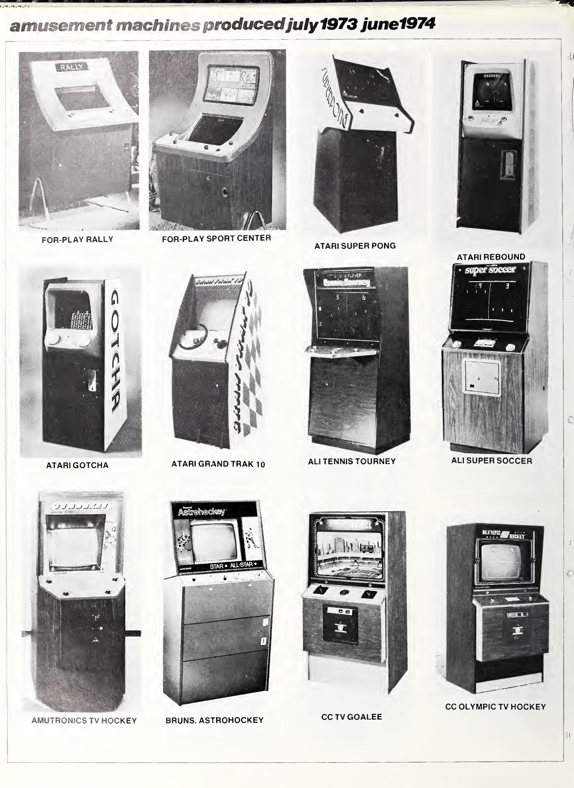
The original photographs make the differences within For-Play's video line visible. Star Trek is an enclosed upright with a high display opening and concentrated space decoration. Rally puts its screen and two controls on a lower sloping housing, with a wood-patterned body and metal support legs. Sport Center adds a taller upper display area filled with sports photographs and places four controls around the play area. These observations come from the recovered sales images, not from reconstructed cabinets or modern illustrations.
Their controls are a particularly useful comparison. Star Trek's photograph shows a prominent joystick; the two later games show rotary knobs. The physical contrast supports discussing different approaches to interaction even when the electrical interfaces remain incompletely documented. A joystick and a rotary control are not interchangeable descriptions of what a customer touched. At the same time, appearance alone cannot establish the directions, sensitivity, or circuit logic assigned to those controls.
The screen photographs deserve equal care. A dark display in a sales photograph is not an actual screenshot of play. The Star Trek and Rally fronts therefore cannot serve as visual proof of projectile shapes, moving objects, score placement, or a particular game state. Sport Center's sports imagery appears in the upper cabinet presentation rather than documenting generated game graphics. A reader can learn a great deal about the machine's external appearance from these sources while still lacking a verified view of its active display.
Dimensions and weights add another practical distinction. Star Trek's flyer explicitly labels its height, width, and depth. Rally and Sport Center provide three-number dimensions without naming the axes in the recovered text. Rally's listed shipping weight is 164 pounds, and Sport Center's is 170 pounds. These are advertised shipping figures, not measured weights of surviving machines. They can help a reader understand how the products were described to dealers without becoming unsupported claims about their exact present-day cabinet construction.
Wood-patterned finishes and sports photographs also affect how the games were presented as objects within a location. The two sports cabinets use recognizable furniture-like surfaces, while Star Trek makes its space theme the dominant external feature. That comparison is visible rather than conjectural. Whether a particular finish resulted from cost, target customers, materials availability, or a designer's preference is not established by the photographs. The history can describe the contrasting treatments without assigning an undocumented motive.S02S06S08
Star Trek and Computer Space: a participant's recollection
The assertion that Star Trek copied Computer Space has more support than an anonymous retrospective label, although its precise technical meaning remains unresolved. In an October 2010 interview with Retrogaming Roundup, subsequently transcribed in the Spring 2012 issue of Retrocade Magazine, Ted Dabney said he was familiar with the For-Play game. Asked about it, he described it as a direct copy. His position as a participant in Computer Space's development makes that recollection relevant to the comparison.
The exchange must be read carefully. The interviewer introduces Star Trek as a part-for-part copy and supplies a September 1972 date. Those propositions enter the conversation through the question. Dabney confirms familiarity and later asserts copying, but says he has no opinion about how For-Play obtained what it used and does not know how the copying occurred. The transcript therefore supports an attributed recollection about the relationship between the games. It does not independently verify the question's exact date or establish a component-by-component circuit identity.
The interview moves into discussion of disguising integrated-circuit markings on some Computer Space machines. The participants consider how a copy might have been made despite such measures. Dabney's remarks include possible explanations, but he explicitly disclaims knowledge of the actual route. Those possibilities do not establish a named employee leaking plans or a proven act of industrial espionage. No recovered document identifies a For-Play engineer copying a particular board or receiving a particular schematic.
This distinction leaves room for a stronger, more precise narrative than either accepting every claim or discarding the recollection entirely. Dabney regarded Star Trek as a copy; the For-Play flyer independently documents a space-combat premise and a joystick-equipped cabinet; contemporary reporting establishes commercial activity in autumn 1972. The remaining engineering question is how closely the two machines matched internally and how For-Play changed their interface. A surviving Star Trek schematic, board inspection, or reliably documented operating example would address that question more directly.
The interview also does not establish the frequently repeated Paramount episode. Copying another game's engineering and using a television-associated name are different historical claims. Evidence relevant to one is not automatic proof of the other. The transcript adds a knowledgeable participant's perspective to the Computer Space comparison while leaving the licensing and legal history open.S18S02
The Star Trek legal story and its missing record
The story that Paramount took action over For-Play's Star Trek is prominent enough to deserve an explicit treatment. Michael Thomasson's 2009 article presents a court confrontation, but does not provide a case name, docket, jurisdiction, date, judgment, or primary citation. Keith Smith's later company account labels the story unconfirmed. These are not two independent proofs of litigation. They are a published assertion and a later historian's warning about its evidentiary status.
The title on the flyer is directly observable. A claimed licensing arrangement or court outcome requires different evidence. The recovered advertisements and show reports do not contain a Paramount credit, but the absence of such a credit cannot prove the complete licensing history. Nor does the game's short documented commercial sequence establish that legal pressure ended production. A cease-and-desist letter, private negotiation, or informal objection could also leave a different documentary trail from a court proceeding. None of those alternatives is established here.
No responsive case record has been recovered. That absence does not prove that no dispute existed, but it also does not support treating the later court story as settled history. The story remains undocumented in the currently available sources. It cannot name the court, describe a ruling, or assign a production-ending effect without further evidence.
This question should remain distinct from Dabney's Computer Space recollection. His familiarity and assessment concern the game relationship; they do not establish what Paramount did about a title associated with its television property. Separating the two claims prevents an engineering recollection from giving borrowed certainty to a legal narrative. The useful historical result is an evidence-aware account of both traditions, with the documentary strengths and gaps of each still visible.S21S19
The ZX-1040: a computer that sold a paper result
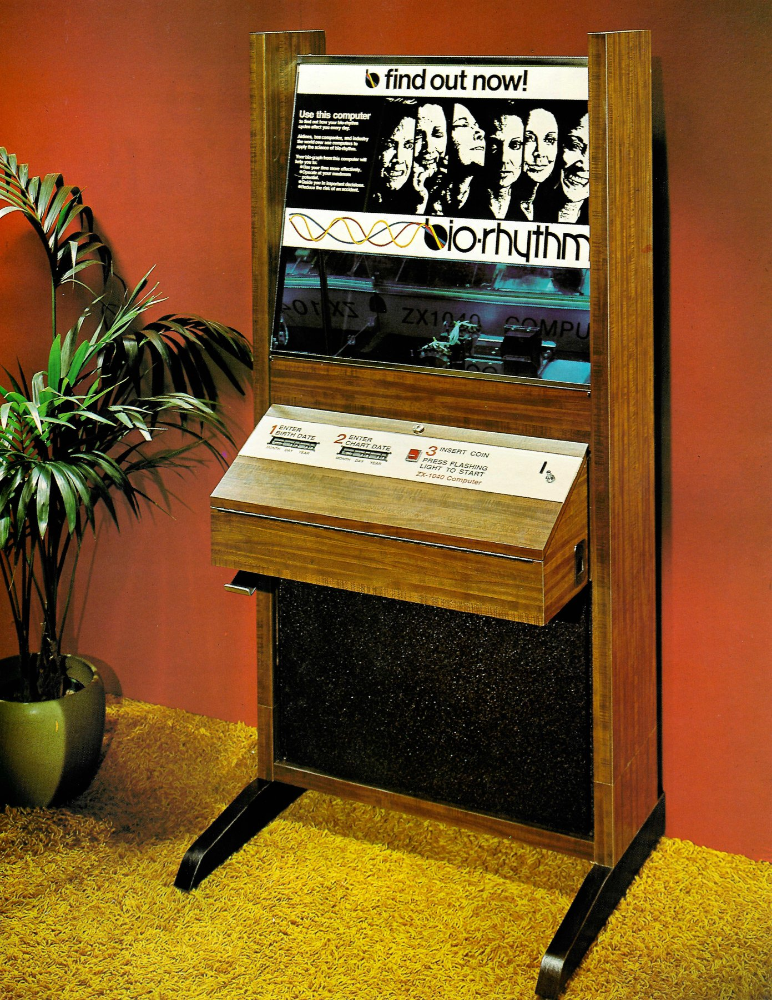
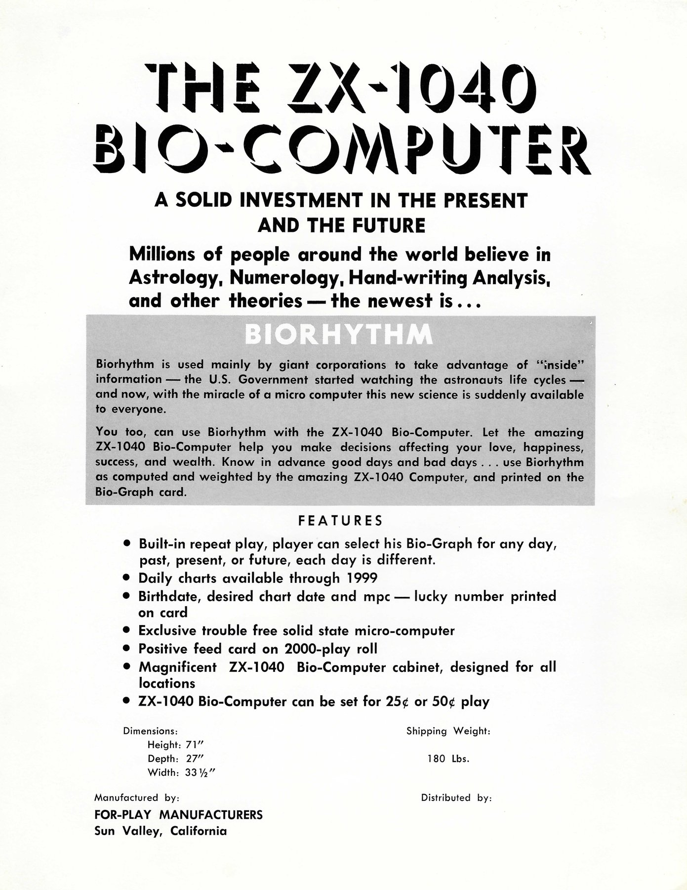
The recovered North American BioRhythm flyer supplies a useful view of For-Play's later product. Its cabinet is an upright with a wood-patterned lower body, a projecting control area, and a window through which the printing mechanism can be seen. A Bio-rhythm title identifies the attraction above the window. Instead of promising a contest between players, the front describes three steps leading to a personally addressed result. The object sold to the customer was a chart printed on paper, not a score remaining on a television display.
First the customer entered a birth date using month, day, and year settings. A second group of date settings selected the day for the requested chart. The final instruction directed the customer to insert a coin and press a flashing light to start the ZX-1040 computer. The photograph and printed labels together explain a fairly unusual interface: the customer supplied dates before watching a machine produce an individualized card. They also show why the computer terminology belongs to this product's own advertising rather than being a label applied only by later historians.
The back identifies it as the ZX-1040 Bio-Computer and credits For-Play Manufacturers in Sun Valley, California. The distributor space is blank in this copy. ACA's relationship is independently documented by trade reporting, but the blank field still matters when describing the flyer. It reflects the document actually preserved and leaves open whether another distributor could have completed the same sales form. It is not evidence that this particular copy was issued by a named regional dealer.
The flyer advertises repeat play for past, present, and future dates. A customer could therefore request another chart without changing the underlying birth date. The printed output was promoted as including the birth date, the chosen chart date, and an mpc, described as a lucky number. Those printed particulars made the result legible as a personal souvenir. They also differentiated the transaction from the shared immediate action promoted for Rally and Sport Center: the machine invited a customer to interpret a result afterward rather than merely finish a round at the controls.
The November 2, 1974 Cash Box gives an earlier production milestone than the December announcement. Its article introduces ACA's ZX-1040 Bio-Computer through Greenman and continues on page MOA32. The continuation explicitly says the unit is in full production at For-Play Mfrs. Corp. and that deliveries to key distributors have begun. This dates an affirmative production and delivery claim to the beginning of November. It does not identify the first machine completed, but it makes the later commercial chronology more precise than a general assignment to 1974.
The trade article says charts could be produced for daily dates from 1900 through 1999. The flyer gives the upper endpoint of 1999 without providing the same lower limit. Read together, the sources support reporting the wider advertised range while identifying its origin in the trade account. The specification is about the dates a customer could select; it does not prove how dates were represented electronically or what would happen outside the advertised interval. No recovered technical test confirms the machine's handling of leap years or invalid input.
Operator provisions were prominent. The machine could be set for a 25-cent or 50-cent transaction, depending on the location. The card supply was advertised as a 2,000-play roll with a positive feed mechanism. The report describes distinctive sound while the customer watched the chart being printed. These details show the sales emphasis on the whole paid interaction: date selection, coin acceptance, a visible process, and delivery of a tangible item. A printer jam, exhausted roll, or incorrect date selection would affect that interaction in ways different from a failed sports-game volley.
The cabinet specifications are unusually clear about dimensional axes. Both the trade account and flyer give a height of 71 inches, depth of 27 inches, and width of 33½ inches; advertised shipping weight is 180 pounds. These labeled measurements can be used directly, unlike the unlabeled three-number lists for Rally and Sport Center. The flyer calls the machine a solid-state microcomputer but does not name its processor. Its patent-pending language likewise records a sales claim, not a recovered patent number or evidence that a patent was granted.
Greenman's introduction compares the product's prospects to a photographic attraction that could remain in one location for years. He argues that repeat date selection would give the Bio-Computer a longer useful earning life than games that quickly fell out of favor. The argument is a contemporary distributor's explanation of why an operator might buy the product. It is especially relevant to For-Play because it points toward a business beyond introducing successive television games. There is no independent revenue series here to establish that the promised longevity occurred.
The same article names discount stores, supermarkets, drug chains, arcades, and shopping malls as tested or proposed settings. It attributes weekly collections of $100 to $125 to Greenman. Those figures are a reported promotional claim, not an inspected route ledger. The range should not be used to calculate a reliable investment return, factory sales total, or national installed base. What the account establishes historically is how ACA framed the market: a personalized chart could be offered wherever a customer might encounter a paid novelty, not just within an amusement arcade.
The later December report returns to the same product, with For-Play manufacture, ACA representation, and comparable operating specifications. An accompanying advertisement uses ZX-100 rather than ZX-1040. That discrepancy remains visible in the preserved pages. Nothing in the recovered material establishes a separate ZX-100 machine with distinct controls, circuitry, or release history. Treating the advertisement's shortened number as a second confirmed product would give a typographic difference more evidentiary force than it can bear.S16S13S14
What the BioRhythm supplement was trying to sell
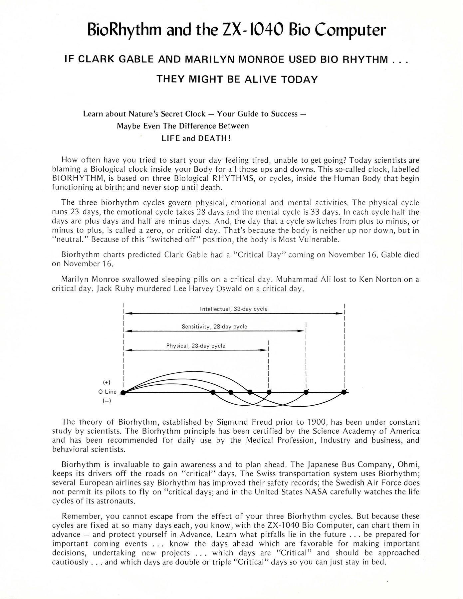
The supplementary sheet explains the attraction's underlying promotional story. It presents three repeating cycles: physical at 23 days, emotional at 28 days, and mental at 33 days. A diagram distinguishes positive portions, negative portions, and crossings. The accompanying text invites customers to interpret these curves as information about their daily tendencies. The sheet therefore illuminates what the printed card was meant to mean to a paying customer, even though it is not an instruction manual or a technical explanation of the computation.
Its rhetoric is much stronger than its electronic specifications. The supplement invokes named historical figures, institutions, transportation operations, and dramatic outcomes to lend authority to the idea. A celebrity example is used to make the theme emotionally immediate. These claims are part of the historical advertisement; the recovered sheet does not supply evidence sufficient to verify them. They illustrate the product's marketing appeal without validating its assertions about personal prediction, accident prevention, or scientific acceptance.
The distinction is important because the presence of a computer did commercial work in the presentation. The customer entered personal data, observed a mechanized process, and received a printed diagram. The machine's ability to perform a calculation is a different question from the validity of the interpretation attached to that calculation. The contemporary sources establish that For-Play and ACA sold a chart-producing attraction built around this premise. They do not establish that the charts could reliably predict health, behavior, luck, or events.
The supplement also helps explain the May 1975 brochure campaign. Greenman reportedly arranged for 50,000 explanatory brochures to support distributors and locations. Such material could teach a customer what to enter and, more fundamentally, why a chart might seem worth purchasing. That promotional quantity describes printed explanatory material. It is not evidence of 50,000 Bio-Computers, 50,000 paid charts, or 50,000 installations. Preserving the unit being counted avoids turning a useful detail of the sales campaign into a misleading production statistic.S16S15
A Japanese sales presentation bearing Sega's name
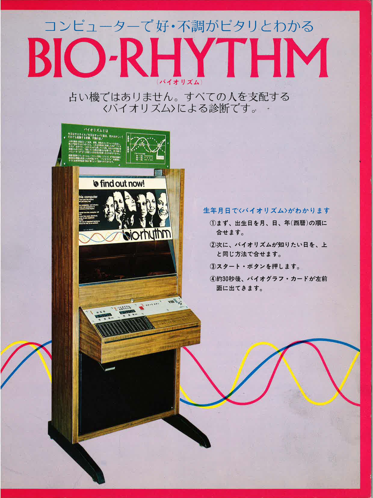
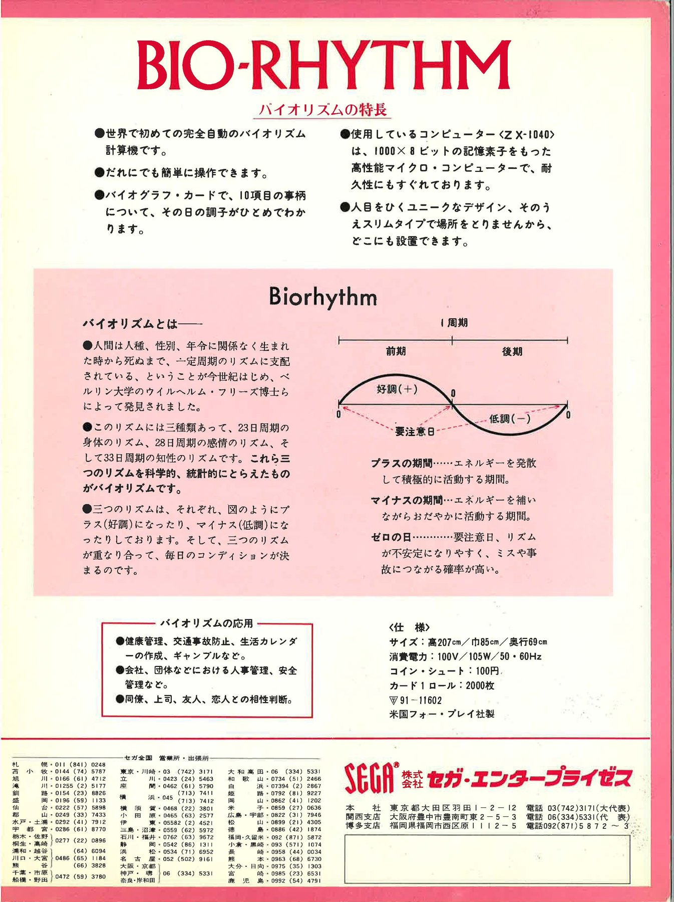
The recovered Japanese Bio-Rhythm flyer provides a regional comparison that the North American documents alone could not supply. The reverse carries the Sega Enterprises name and logo, while its manufacturing credit identifies the American For-Play company. The ZX-1040 designation is printed within the feature description. These visible credits support an association between the Japanese sales presentation, Sega, and For-Play's chart-producing machine. They do not supply an import contract, licensing agreement, or evidence that Sega designed the underlying electronics.
The front retains a recognizable wood-patterned upright and the English find out now wording on the machine. Above it sits a green explanatory panel with Japanese text and a cycle diagram. The pictured cabinet uses long curved support feet and presents its date-setting controls below the print window. This is a meaningful regional sales image, not simply a duplicate of the North American page with a different archive filename. It shows how the paid chart attraction was explained to another readership through additional local-language instructions and presentation.
The front's numbered instructions describe entering a birth date, selecting the date for the desired result, pressing the start button, and receiving a Bio-Graph card after approximately 30 seconds. That advertised interval adds a specific account of waiting for the printed product, although it is not a measured test of a recovered machine. The Japanese explanatory text again presents biorhythm interpretation as the reason to obtain the chart. Its promotional assertions, like those on the English supplement, explain the sales premise but are not independently verified scientific conclusions.
The reverse gives a 100-yen coin setting and a 2,000-card roll. It lists 100-volt power, 105 watts, and 50/60 Hz. The listed cabinet measurements are 207 centimeters high, 85 centimeters wide, and 69 centimeters deep. The height differs substantially from the North American 71-inch specification, while the width and depth are broadly comparable. The pictured explanatory panel or cabinet presentation may be relevant to that difference, but the flyer does not resolve it. The measurements should remain associated with their respective documents rather than being combined into one universal specification.
A feature line describes the ZX-1040 microcomputer with 1,000 by 8-bit memory. This is a printed advertising specification, not an inspected memory arrangement or a processor identification. It does not establish the Intel 4004 attribution or support reconstructing the architecture without a schematic. Its value is that it preserves what the regional seller chose to emphasize about the computer, supplementing the North American sheet's more general solid-state language.
The archive assigns this Japanese material to 1975. That date is uploader metadata; no clearly identifiable printing date was verified on the recovered pages. The historical account can therefore describe a Japanese sales flyer cataloged as 1975 while preserving that distinction. It strengthens the regional product trail without independently fixing the start or duration of the Sega relationship. The two original scans and the archive metadata are preserved so future examination can revisit the date and specifications directly.S17
Distribution into 1975
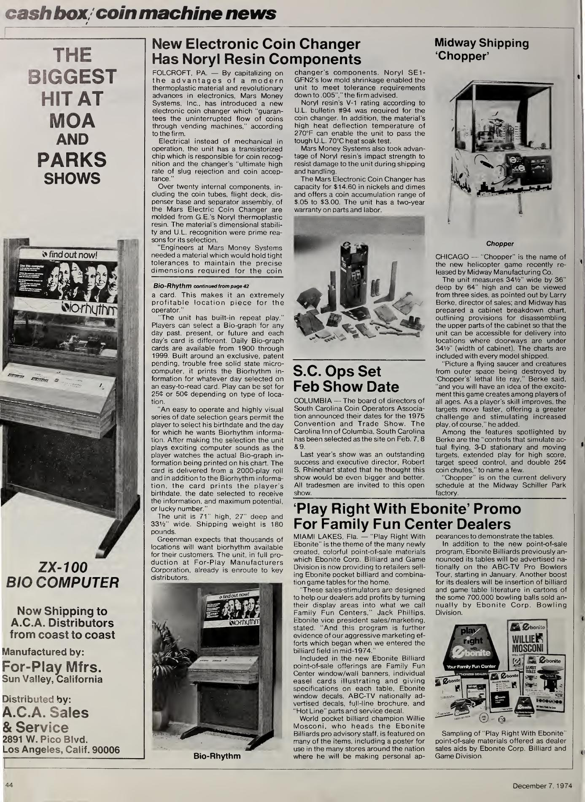
The Bio-Computer remained in trade reporting the following spring. In May 1975, Cash Box identified Leonard Amusement of Adrian, Michigan, as one of its distributors and described ACA's nationwide representation. This adds a named regional participant to a history that can otherwise become a sequence of broad claims from the Los Angeles sales office. It does not reveal how many machines Leonard handled, but it demonstrates that the For-Play product still had an identifiable distribution presence.
ACA was also promoting the machine's theme. The report said Greenman had arranged a substantial printing of explanatory brochures for distribution at locations. The aim was to encourage customers to understand the concept and pay for a chart. That campaign helps explain why this machine could appeal to an operator differently from Rally or Sport Center: selling the premise was part of selling the experience. The reported brochure quantity must not be mistaken for a production total.
The dated evidence therefore supports a careful account: For-Play video games appeared in 1972 and 1973, its video products continued in 1974 trade reporting, and a separately documented card-printing product was distributed into 1975. Those statements describe the surviving record. A definitive dissolution date still requires corporate or comparable documentary evidence.S15
The unresolved Intel 4004 attribution
A separate history of microprocessors points toward an engineering source for the biorhythm machine. William Aspray's chapter on the social construction of the microprocessor attributes a coin-operated biorhythm application to For-Play and discusses Intel 4004 use. Its note 64 cites Electronic Engineering Times for October 20, 1975, page 5, with an article about a microprocessor computing and checking life-cycle tendencies in a coin-operated biorhythm machine. The specificity gives the attribution a precise documentary trail—a named publication, exact date, page, and subject—but the underlying article still needs direct inspection before the claim can be strengthened.
The original trade article has not been recovered for this account. The processor claim therefore remains a scholarly secondary attribution rather than a verified ZX-1040 specification. The original For-Play flyer supplies no chip designation, and the manuals located in inventories have not been inspected. Neither the microcomputer wording nor the model's digits are enough to fill that gap. A board photograph with readable components, a legible schematic, or the cited article would allow a more concrete discussion.
It is also necessary to keep this technical lead separate from the three video games. Evidence for a processor in a chart-printing attraction would not establish that Star Trek, Rally, or Sport Center used the same technology. No bench-tested video board or executable program is available for direct comparison; the preserved board photographs support only a limited visual account. The narrower conclusion is that For-Play's later non-video product is a documented computer-themed attraction with a promising processor attribution, while the engineering of the video line remains incompletely documented.S22S16
Surviving machines and the paperwork around them
The museum’s membership census listed no current member-owned examples at the time reviewed, while retaining former holdings: one original Star Trek, two original Rally machines and a Rally board, and one original Sport Center and a board. These are membership records, not an inspected worldwide inventory. They document reported collecting history without establishing where the artifacts are now or whether they work.
The strongest physical-survival testimony found for the video line concerns Sport Center. On May 1, 2013, a Pennsylvania forum participant using the name timelinearcade reported obtaining a 1973 For-Play machine. The account says the television remained installed, the game initially worked partly, and game output later disappeared while the owner investigated resistors and sought repair help. This is a dated first-hand ownership and repair claim. It is more informative than inferring survival or extinction from an empty modern collector census.
The retrieved discussion does not supply a usable photograph for this package. The machine has not been independently inspected, and the old post does not establish its current owner or working condition. The distinction still leaves a meaningful finding: a person publicly described handling and repairing a claimed Sport Center decades after its commercial appearance. The preservation history should retain that testimony with its date and limitations rather than describe the title as having no surviving examples.
Rally has a different documentary trail. Andy's Arcade's manual inventory lists a For-Play Rally flyer with basic photocopied wiring information and instructions. The recovered inventory row carries no download link for those materials. It identifies paperwork in a holder's collection, not the content of an inspected circuit diagram. This is nevertheless a focused lead for future preservation work: a wiring sheet and instructions could clarify solitary play, control connections, and the relationship between advertised features and actual operation.
Sport Center schematics appear in indexed MAMEWorld discussions. One later discussion describes a color and black-and-white schematic ZIP. The thread and attachment were not available for inspection, so the indexed description remains unverified. The word “color” in that description does not establish a separate color cabinet or released video variant, and the meaning of the distinction remains uncertain until the file itself can be examined.
An additional physical manual listing was located for Sport Center, but no purchase or contact was made. A seller's description can establish the existence of a possible acquisition route without proving the completeness, revision, or readability of a manual. These leads are not pending replies: no request was sent. They remain future opportunities rather than dependencies on an exchange that never occurred.
For the Bio-Computer, John’s Jukes' inventory provides more specific model-level paperwork. The inspected list contains ZX-1040 and ZX-1040 Rev G rows and marks schematic and instruction availability. Its reference to Compunetics is useful catalog information from the holder, but not a corporate succession document. Rev G indicates a named paperwork revision in the inventory; it does not date that revision or establish a separately marketed amusement product. The actual manual and schematics remain unheld.
Taken together, these records show why preservation is more than a question of whether a cabinet currently turns on. Sales flyers preserve appearance and intended features; wiring sheets could recover connections; operator instructions could recover rules; ownership testimony records later handling; and a schematic might permit reconstruction of behavior. Each answers a different question. Keeping those forms distinct protects the surviving fragments from being made to stand for a complete technical record that has not yet been assembled.S23S24S25S28S32
What the recovered hardware photographs establish
The Museum of the Game's Rally images add physical evidence beyond the sales flyer. One view shows the title above an inactive screen and two player knobs below it. A separate close view makes the printed control instructions readable: the customer deposits a coin, the machine serves the ball automatically, and the player tries to avoid missing it to obtain a high score. The panel also carries a For Play credit. These observations strengthen the ball-and-paddle description and establish automatic serving as an instruction on the pictured example. They do not explain how the advertised one-player option works.
The screen remains dark in the photograph. It cannot supply a gameplay screenshot, verify the score display, or establish that this example was operational when photographed. Its visible control labels are still valuable: Player 1 and Player 2 identify the two positions, and a separate coin-area marking shows 25 cents. That physical arrangement agrees with the flyer’s two controls and quarter-price advertising. The photograph is attributed through the museum's Rally entry; its capture date, ownership chain, and completeness are not independently established here.
Two further Rally images show the component and solder sides of a board. RALLY lettering is visible on the component side, which contains rows of integrated circuits, discrete components, and an edge connector. The solder-side image preserves the routing and connection pattern on the underside. These are two different faces of an attributed artifact, not two confirmed board revisions. The photographs make the circuit layout visible but do not provide a tested netlist, a complete component identification, or a verified explanation of how its functions are generated. The database's 68-integrated-circuit figure remains unconfirmed by a direct component count or inspected schematic.
The Sport Center photographs, contributed to the museum by Adam Lee, are likewise useful at a bounded level. The wider image shows a populated board connected to a wiring harness beside a cabinet. A close detail makes the printed SPORTS CENTER wording visible. This physical spelling supplements the advertising's Sport Center form without creating another title. The detail also improves the visibility of individual component markings, although it is not a schematic. Neither photograph proves the complete play logic or establishes when the board was installed in the accompanying cabinet.
The boards differ visibly in arrangement and presentation. A description of those photographs can discuss their component rows and connectors, but cannot assign every component to sound, scoring, timing, or a particular Sport Center selection. There is no bench test or traced comparison in this record. That limitation is consequential for claims of original engineering, exact integrated-circuit counts, or reuse between the two sports games. Photographic preservation supplies a stronger starting point for those questions while leaving the unperformed technical work clearly identified.
All six museum photographs are preserved with their source information and existing KLOV watermarks. The museum's stated reuse conditions include attribution and limits on image use, so this supplemental group is not reproduced here. The photographs still provide useful physical evidence of surviving controls, boards and cabinet details.S30S31
For-Play in museum collections
Two finding aids at The Strong independently place For-Play ephemera within established coin-operated amusement collections. The Larry Bieza coin-op and amusements history collection, identified as 119.6425, lists a Sport Center flyer in Box 13, Folder 34. The item is undated in the catalog, with an approximate 1970s description. That is a precise archival locator. It does not independently date the flyer to a particular month or prove that it differs from the copy recovered from the online flyer archive.
The Steve Kordek coin-op and amusements collection provides a broader cluster. Box 4, Folder 9 lists For-Play material for the ZX-1040 Bio Computer, Las Vegas Gallery, Rally, Sport Center, and Star Trek. The catalog places these as undated material from approximately the 1970s. Its grouping is especially useful because it preserves the video and non-video products within one manufacturer's documentary trail. It supports the connection between the product names while leaving the individual documents available for later comparison.
These finding aids do not establish that the museum originals have been digitized. They identify the specific collections, boxes and folders where additional For-Play material can be examined, while the online scans cited elsewhere have separate provenance.
The archive describes research access and copying conditions, while intellectual-property rights are not automatically transferred with a donated collection. The finding aids identify specific For-Play holdings that could clarify instructions, alternate printings and model details if examined directly.S26S27
The three-title video catalog
The currently documented video catalog contains three distinct titles: Star Trek, Rally, and Sport Center. Each has recovered sales paperwork crediting For-Play manufacture, with contemporary trade coverage connecting it to ACA's commercial activity. The count refers to those identifiable video products. It does not imply that their original engineering has been individually proved or that no additional title could ever be discovered.
Sport Center's four advertised choices remain features of one product. Counting each tennis or hockey configuration as a separate game would confuse play options with separately marketed machines. The Sport Center and Sports Center spellings likewise do not establish two releases. The recovered marquee and contemporary advertisements support Sport Center, while the alternative form helps readers find catalog entries under the other spelling.
Las Vegas Gallery and the Bio-Computer explain the manufacturer's wider business but sit outside this video scope. Their electronic operation alone does not make them video games. The former used a physical target and infrared rifle; the latter produced a printed card. Including them in the company narrative makes the commercial history more complete without changing what the output total measures.
That catalog boundary also clarifies the operating dates. The latest video product evidence and the latest evidence of any For-Play business are different milestones. A Bio-Computer distribution report from 1975 cannot be used to date a new video release in that year. Conversely, the absence of a later video title does not establish that the manufacturer had already closed. Keeping these dates separate allows the history to acknowledge the surviving evidence without inventing either a longer video catalog or an early corporate end.
The wider association record remains separate from the confirmed video list. The later Bio-Rhythm database entry, its 1978 date, and material associated with Compunetic Devices do not establish a fourth For-Play video game or uninterrupted legal continuity. The ZX-1040 Rev G inventory likewise identifies documentation, not a new video release. The alternate flyers document changes in sales presentation rather than independently established hardware revisions. No additional prototype, unreleased video title, licensed regional video version, conversion, or port has been independently established by the surviving evidence. Further primary material could still change that conclusion.S02S06S08S25S29S32
Where the record ends
For-Play's documented sequence moves from an infrared dice-target attraction to three marketed video cabinets and then to a chart-printing computer. The three video titles are securely connected to its manufacturing name. ACA's show appearances, ordering reports, and distribution activity explain how those products reached the trade. The cabinet photographs and detailed Sport Center choices give the video line an identity beyond the later labels that have kept the company in historical summaries.
The latest recovered contemporary distribution notice is from May 1975. It establishes continued commercial activity involving a For-Play product, not a legal endpoint. Later Bio-Rhythm and Compunetic references are preserved as identity questions rather than stretched into a continuous corporate chronology. A future corporate record or original technical document could extend or refine the account. Until then, the defensible ending is an unknown dissolution date after a business history that demonstrably continued beyond its first video-game period.
The gaps are part of that history's present condition: precise first-shipment dates, individual game designers, internal video circuitry, an alleged legal intervention, and later corporate succession remain incompletely documented. They need not obscure what the originals do establish. For-Play sold visibly distinct electronic amusement products through a named distribution network, participated in overseas trade, and remained associated with a new paid computer attraction after its three known video titles had appeared. That fuller record is the basis for the company history preserved here.S01S02S06S08S13S15
21. Open questions
The surviving record establishes For-Play's three-title video catalog and its broader electronic-amusement business, but several questions remain open to stronger primary evidence.
When was For-Play legally incorporated, and when did it cease operating?
Contemporary reporting establishes the company by spring 1972 and commercial activity through May 1975. A corporate filing, dissolution record or equivalent legal document could establish the exact legal dates.
Contribute evidenceWhen did Star Trek, Rally and Sport Center first ship to customers?
Show appearances, orders, location tests and shipment reporting provide strong commercial bounds, but the exact first shipment date for each video title remains unresolved.
Contribute evidenceWho designed the games, and what circuitry did the production machines use?
For-Play manufacture is well supported, but game-specific engineering authorship, complete schematics and several hardware details remain incomplete. Original engineering records, boards, manuals or schematics could clarify them.
Contribute evidenceHow should the Sport Center shipment reports be reconciled?
A February 1974 report contains a 1,000-unit headline and a 2,000-unit figure in the body. The named South African customer is also unknown, and the reported French arrangement appears prospective rather than proven completed distribution.
Contribute evidenceWas there a documented Paramount intervention over Star Trek?
Later accounts repeat a licensing or legal story, but no primary Paramount correspondence, court action or settlement has been recovered. Such a document would materially change the present treatment.
Contribute evidenceWhat processor and model history lies behind the ZX-1040 Bio-Computer?
A secondary history points to Intel 4004 use, but the original engineering evidence remains uninspected. The relationship among ZX-100 wording, ZX-1040 material, Rev G documentation and later Compunetic Devices references also remains unresolved.
Contribute evidenceWhat survives today?
Former collector holdings, a 2013 Sport Center repair account, museum photographs and document inventories show that hardware and paperwork have survived, but the present location and operating condition of complete Star Trek, Rally, Sport Center and Bio-Computer examples are not fully established.
Contribute evidenceSources
- S01. Cash Box, 09/16/1972, printed/PDF pp.46 and 61. https://retrocdn.net/Special:Redirect/file/CashBox_US_1972-09-16.pdf
- S02. Star Trek original two-sided For-Play sales flyer. https://flyers.arcade-museum.com/videogames/show/2320
- S03. Cash Box, 10/07/1972, full PDF p.84. https://retrocdn.net/Special:Redirect/file/CashBox_US_1972-10-07.pdf
- S04. Cash Box, 10/21/1972, printed p.77 / full PDF p.79. https://retrocdn.net/Special:Redirect/file/CashBox_US_1972-10-21.pdf
- S05. Cash Box, 10/28/1972, printed/PDF p.52. https://retrocdn.net/Special:Redirect/file/CashBox_US_1972-10-28.pdf
- S06. Rally original and alternate For-Play sales flyers. https://flyers.arcade-museum.com/videogames/show/2524
- S07. Cash Box, 03/17/1973, printed/full PDF pp.55,57. https://retrocdn.net/Special:Redirect/file/CashBox_US_1973-03-17.pdf
- S08. Sport Center original and alternate For-Play sales flyers. https://flyers.arcade-museum.com/videogames/show/2319
- S09. Cash Box, 11/24/1973, printed/full PDF pp.48,51. https://retrocdn.net/Special:Redirect/file/CashBox_US_1973-11-24.pdf
- S10. Cash Box, 12/15/1973, printed p.44 / full PDF p.42. https://retrocdn.net/Special:Redirect/file/CashBox_US_1973-12-15.pdf
- S11. Cash Box, 02/16/1974, printed/full PDF pp.52,54,56. https://retrocdn.net/Special:Redirect/file/CashBox_US_1974-02-16.pdf
- S12. Cash Box, 07/06/1974, full PDF pp.204,227,236. https://retrocdn.net/Special:Redirect/file/CashBox_US_1974-07-06.pdf
- S13. Cash Box, 11/02/1974, printed MOA12/MOA32 / full PDF pp.34,54. https://retrocdn.net/Special:Redirect/file/CashBox_US_1974-11-02.pdf
- S14. Cash Box, 12/07/1974, printed/full PDF pp.42,44. https://retrocdn.net/Special:Redirect/file/CashBox_US_1974-12-07.pdf
- S15. Cash Box, 05/17/1975, printed/full PDF p.41. https://retrocdn.net/Special:Redirect/file/CashBox_US_1975-05-17.pdf
- S16. North American BioRhythm flyer and supplement. https://archive.org/details/bio-rhythm-by-for-play-1
- S17. Japanese Bio-Rhythm flyer bearing Sega Enterprises credit. https://archive.org/details/bio-rhythm-by-for-play-sega-2
- S18. Retrocade, Spring 2012, full PDF pp.136,137,170; Ted Dabney interview transcription. https://adamarchive.org/archive/Media/Newsletters%20-%20CV/Retrocade%20-%20Vol.%20%2301%20Issue%20%2302%20%28Spring%202012%29.pdf
- S19. Keith Smith, For-Play Manufacturing, 07/05/2013. https://allincolorforaquarter.blogspot.com/2013/07/for-play-manufacturing.html
- S20. Keith Smith, Early Video Game Companies...,October 2012. https://allincolorforaquarter.blogspot.com/2012/10/early-video-game-companies-in.html
- S21. Michael Thomasson, For-Play Star Trek Coin-Op, 2009. https://www.gooddealgames.com/articles/For-Play%20Star%20Trek%20Coin-Op.html
- S22. William Aspray microprocessor history, chapter 5, note 64, printed page 264. https://doczz.net/doc/78944/chapter-5
- S23. timelinearcade Sport Center owner/repair post, 05/01/2013. https://forums.arcade-museum.com/threads/sport-center-arcade-game-1973-for-play-company.273910/
- S24. Andy's Arcade manual inventory. https://www.andysarcade.net/personal/manuals.htm
- S25. John's Jukes manual inventory, full PDF pages 1 and 32. https://flippers.com/pdfs/JohnsJukesManualsList.pdf
- S26. The Strong, Larry Bieza finding aid, August 2021. https://www.museumofplay.org/app/uploads/2021/09/Finding-Aid-to-the-Larry-Bieza-coin-op-and-amusements-history-collection_082321.pdf
- S27. The Strong, Steve Kordek finding aid, February 2018. https://www.museumofplay.org/app/uploads/2021/09/Finding-Aid-to-the-Steve-Kordek-coin-op-and-amusements-collection_020618.pdf
- S28. MAMEWorld Sport Center schematic lead. https://www.mameworld.info/ubbthreads/showflat.php?Cat=&Number=381080&o=&page=217&sb=4&vc=1&view=expanded
- S29. Las Vegas Gallery two-sided original sales flyer. https://flyers.arcade-museum.com/arcades/show/8262
- S30. Museum of the Game Rally/Sports Center physical photographs. https://www.arcade-museum.com/Videogame/rally
- S31. Museum of the Game acceptable-use conditions. https://www.arcade-museum.com/acceptable-use-copyright-trademarks
- S32. Museum of the Game, For-Play video catalog and Bio-Rhythm record. https://www.arcade-museum.com/Videogame/rally ; https://www.arcade-museum.com/Videogame/star-trek--for-play ; https://www.arcade-museum.com/Videogame/sports-center ; https://www.arcade-museum.com/Arcade/bio-rhythm